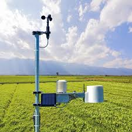

Data Loggers
LA IMPORTANCIA DEL REGISTRO DE DATOS (DATA LOGGERS)
Los data loggers (registradores de datos) son dispositivos electrónicos que miden, almacenan y registran datos automáticamente a lo largo del tiempo. Su importancia radica en el monitoreo continuo y preciso, permiten registrar variables como temperatura, humedad, presión, voltaje, luz o CO₂ de forma constante, etc. En resumen, los data loggers son importantes porque garantizan control, seguridad, eficiencia y trazabilidad en procesos donde los datos confiables son críticos.
|  |
Cada vez en más frecuente en nuestro día a día contar con dispositivos que registran información del entorno y generan una gran cantidad de datos. Normalmente, esa información se muestra en pantallas y no se registran en ninguna estructura de datos. En este documento se detallan distintas vías para almacenar y gestionar la información recogida.. Nos vamos a centrar en las que almacenan la información en una base de datos (debemos tener acceso a un servidor de base de datos, ya sea en nuestro propio servidor o en alguna plataforma que nos ofrezan ese servicio). La mayoría de los NAS incluyen dentro de sus paquetes un gestor de base de datos. Por otro lado, vamos también a estudiar la forma de enviar los datos a una hoja de cálculo de google sheets en tiempo real. Si bien, la cadencia de envío de datos no es comparable con la que se alcanza con un servidor propio. En google sheets se pueden alcanzar envíos de datos cada 2 o 3 segundos. |
Cada método de los citados tiene sus pros y contras que estudiaremos a lo largo de este documento. Y es uno de los objetivos de este trabajo, determinar qué método nos interesa para cada aplicación.
Los objetivos específicos que pretendemos alcanzar son:
- Registro de los datos que adquirimos con nuestra sensorización
- Envío de datos de nuestro sistema de control a un ecosistema de datos
- Consulta configurable de los datos registrados
- Graficado de los datos adquiridos
- Graficado en tiempo real de los datos medidos